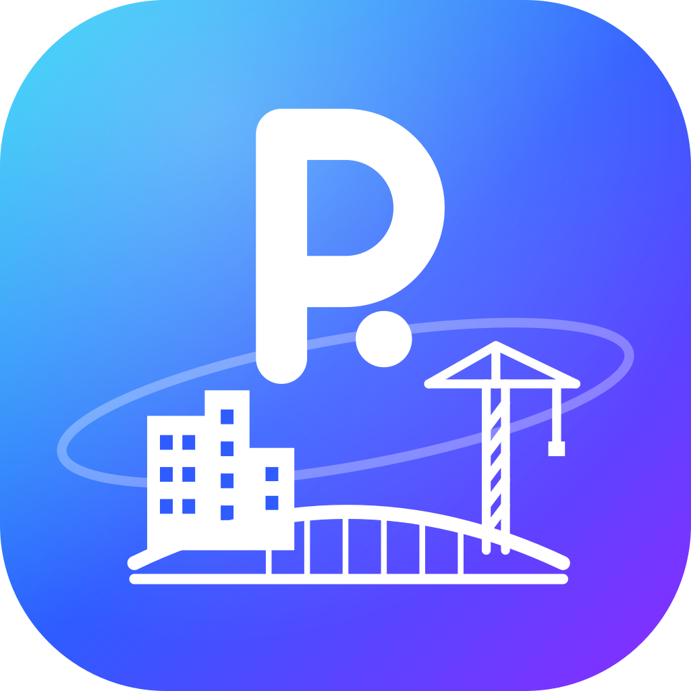

PinDeskPolítica de privacidad
PinDesk es una aplicación para ver y anotar documentos, planos y archivos, organizar tareas y trabajar con un asistente con inteligencia artificial. Esta página explica qué datos usa, para qué y cómo puedes borrarlos.
1. Lo que se queda en tu teléfono
Los archivos que abres, tus anotaciones, chats, notas, tareas, grabaciones y capturas se guardan en el almacenamiento de la app en tu dispositivo. No los subimos a nuestros servidores. Si usas la sincronización por Wi‑Fi, viajan directamente entre tus propios aparatos en tu red local.
2. Tu cuenta (inicio de sesión con Google)
Cuando entras con Google, recibimos de Google y guardamos en nuestro servidor:
- tu correo electrónico, tu nombre y tu foto de perfil;
- tu plan (gratis, prueba o Pro), hasta cuándo dura y las funciones que tienes activas;
- cuántas consultas al asistente has hecho cada día, para aplicar el límite diario.
No recibimos tu contraseña de Google ni accedemos a tu Gmail, tus contactos, tu Drive ni a ningún otro dato de tu cuenta.
3. El asistente con IA
Lo que le escribes al asistente, y los archivos o imágenes que le pides revisar, se envían a través de nuestro servidor a Anthropic (el proveedor del modelo Claude) solo para generar la respuesta. Nuestro servidor no guarda el contenido de esas conversaciones; solo cuenta cuántas consultas hiciste. Anthropic trata esos datos según su política de privacidad y no los usa para entrenar sus modelos por defecto en el uso a través de su API.
4. Pagos
Si compras PinDesk Pro, el pago lo procesa Mercado Pago o Lemon Squeezy. Nosotros no vemos ni guardamos los datos de tu tarjeta; solo recibimos la confirmación del pago y el correo con que se hizo, para activar tu plan.
5. Comunidad
Si subes una plantilla o una mini‑app a la galería de la comunidad, se guarda en nuestro servidor y, cuando se publica, la pueden ver y descargar otros usuarios junto con el nombre que elijas mostrar. Puedes pedir que se retire.
6. Otros datos técnicos
- Los informes de errores se guardan en tu teléfono; solo nos llegan si tú decides enviarlos.
- La app comprueba si hay versiones nuevas consultando GitHub.
- No usamos herramientas de analítica ni de publicidad.
7. Cuánto tiempo y cómo borrar tus datos
Guardamos los datos de tu cuenta mientras la uses. Puedes cerrar sesión en la app en cualquier momento y pedirnos que borremos tu cuenta escribiendo al correo de abajo: la eliminamos en un plazo de 30 días. Lo que está en tu teléfono se borra al desinstalar la app o borrar sus datos.
8. Menores
PinDesk no está dirigida a menores de 13 años y no recogemos a sabiendas datos de ellos.
9. Cambios
Si cambiamos esta política, actualizaremos la fecha de arriba y, si el cambio es importante, lo avisaremos en la app.
10. Contacto
Para cualquier pregunta sobre tus datos: max.antony.9@gmail.com.